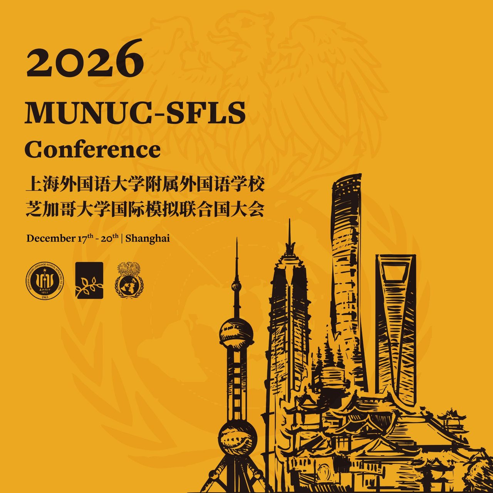
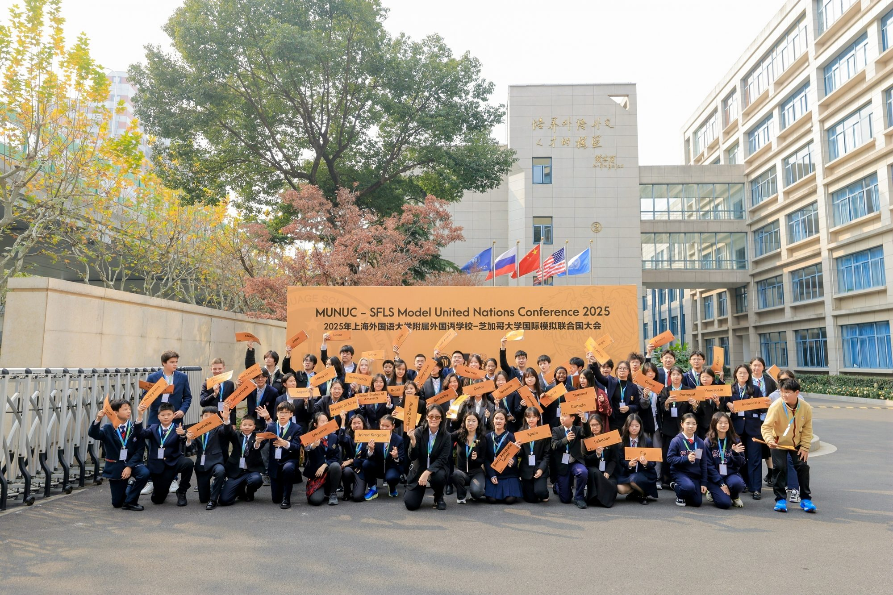
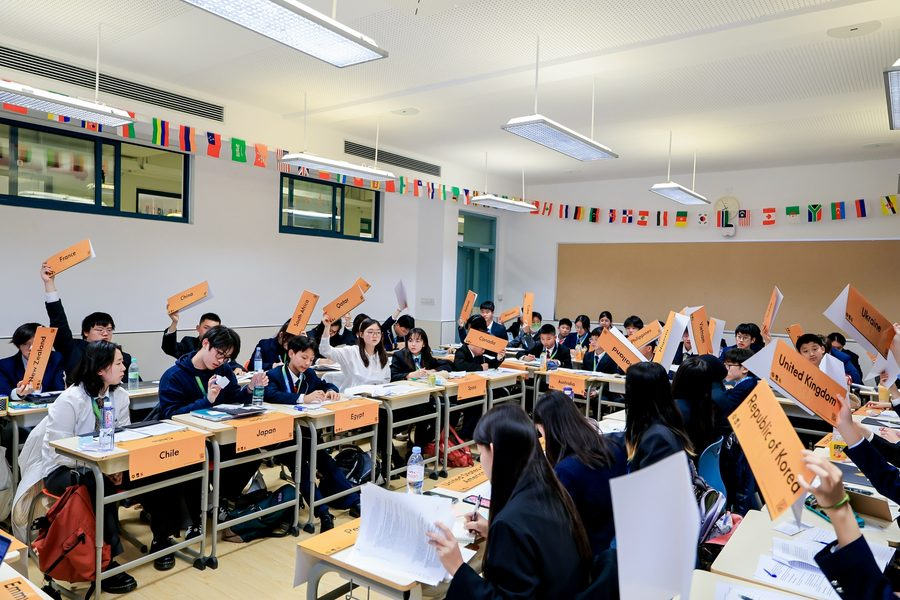
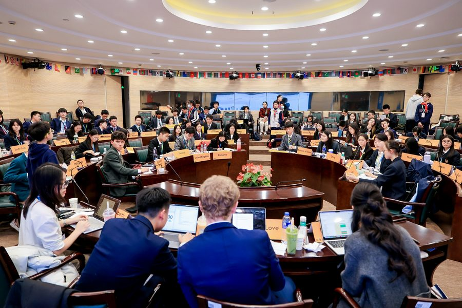
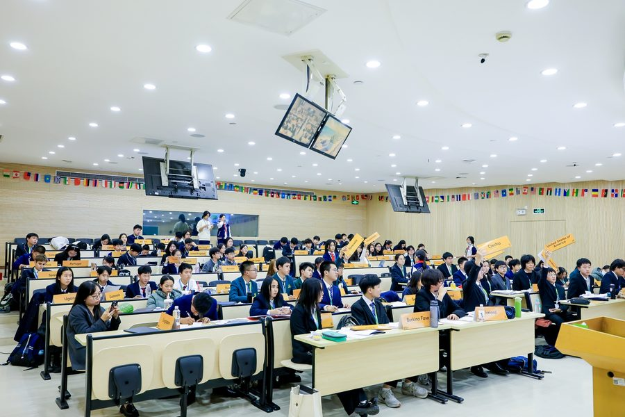
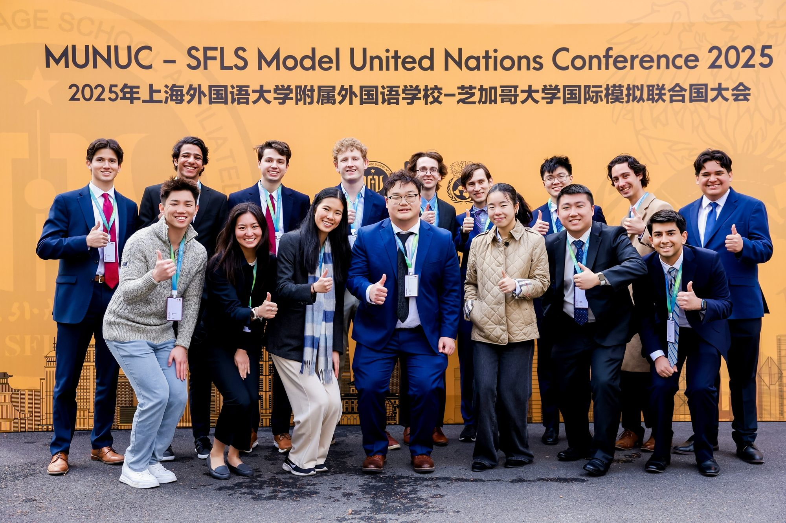

MUNUC · SFLS 2026
2026 年上海外国语大学附属外国语学校与芝加哥大学国际模拟联合国大会
2026 年 12 月 17 日至 20 日 · 上海

组委会欢迎信
尊敬的各校领导、老师们、同学们：
我们特此诚挚地邀请贵校师生莅临参与“2026 年第十一届上海外国语大学附属外国语学校与芝加哥大学国际模拟联合国大会”（MUNUC · SFLS 2026）。本次会议将于 2026 年 12 月 17 日至 20 日在上海外国语大学附属外国语学校隆重举行。
本次会议由上海外国语大学附属外国语学校、芝加哥大学模拟联合国大会与蔚蓝国际模拟联合国教育平台三方联合主办。芝加哥大学模拟联合国大会享誉全球，是国际模联领域极具标杆意义的盛会。结合蔚蓝国际成熟的模联教育平台资源，以及上外附中多年承办国际会议、深耕模联教育的实践积淀，本次大会致力于打造一处兼具学术深度与全球视野的青年思想高地。我们期待汇聚世界各地青年，聚焦全球治理现实议题，唤醒青年的思辨力量，锻造跨文化沟通本领，涵养面向未来的全球胜任力。
上海外国语大学附属外国语学校肇始于 1963 年，是经周恩来总理亲自批示设立的七所外国语学校之一，直属教育部，素有“外语外交人才的摇篮”的美誉。六十余载薪火相传，深厚的人文底蕴滋养一代代学子，让他们根植华夏沃土，瞭望世界风云。作为上海市实验性示范性高中、全国外国语学校工作研究会会长与理事长单位、全国中小学外语教研示范学校，学校始终秉持“服务祖国发展、服务人类进步”的办学宗旨，传承“自强、至诚、志远”的校训，致力于培养全面发展、外语见长、文理并举、高素质、复合型、国际型预备英才。自 2004 年模拟联合国社团成立以来，一届届学子奔赴海内外各大会场，以专业的学术素养发声，尽显新时代青年守护和平、勇担使命的少年意气。
本次大会设置多维度、多层次的委员会，为青年搭建起沉浸式的国际议事仿真场景。代表们将撰写立场文件，锚定立场、梳理洞见；在会场之中展开思辨交锋，在观点碰撞间拓展认知边界；投入复杂多边磋商，在博弈与权衡中打磨战略格局。在这里，青年不再只是全球议题的旁观者，而是化身议题的思考者、方案的共建者。当代表们站在“国家”的立场，为全球气候行动斟酌字句，为数字时代的全球治理谋划制度构想，收获的远不止谈判与交涉的能力。这更是一场独属于青年的实践：以少年之思，关切人类共同命运；以青春之力，探寻全人类共同发展的可行道路。我们期待，各位代表可以在唇齿交锋之间彰显格局，在并肩协作之中凝聚信任，用属于新生代的创想与行动力，为纷繁复杂的时代，注入独属于青年的光亮。
目前，会议报名工作陆续展开。我们将在蔚蓝国际 WEClub 微信公众号、蔚蓝国际网站的官方页面及上外附中相关微信公众号公布会议具体信息，以方便各位的报名和咨询。
我们诚邀您共赴这场思想盛会，于岁末冬日在上海共同见证青年才俊的智慧激荡与时代回响！
2026 年上海外国语大学附属外国语学校与芝加哥大学国际模拟联合国大会组委会2026 年 9 月




委员会与议题设置
- ECOFIN
联合国大会第二委员会：经济和金融委员会
Economic and Financial Committee
- Regulation of Off-Shore Tax Haven离岸避税天堂的监管
- 联合国大会常规委员会80 至 90 人
- SOCHUM
联合国大会第三委员会：社会、人道主义和文化委员会
Social, Humanitarian and Cultural Committee
- Protection and Promotion of Minority Language Rights少数民族语言权利的保护与促进
- 联合国大会常规委员会80 至 90 人
- SPECPOL
联合国大会第四委员会：特别政治和非殖民化委员会
Special Political and Decolonization Committee
- Impact of Tourism on Indigenous Populations旅游业对原住民群体的影响
- 联合国大会常规委员会80 至 90 人
- UNICEF
联合国儿童基金会
United Nations Children’s Fund
- Addressing the Status of Homeless Youth应对无家可归青少年的现状
- 联合国经社理事会系统36 人
- UNESCO
联合国教育、科学及文化组织
United Nations Educational, Scientific and Cultural Organization
- Protection and Preservation of World Heritage Sites世界遗产地的保护与保存
- 联合国经社理事会系统50 至 60 人新手委员会：初中及 9 年级以下
- UNCSW
联合国妇女地位委员会
United Nations Commission on the Status of Women
- Combating Gender Based Violence打击基于性别的暴力
- 联合国经社理事会系统45 人新手委员会
- UNESCAP
联合国亚洲及太平洋经济社会委员会
United Nations Economic and Social Commission for Asia and the Pacific
- Climate Displacement and Sinking Nations气候迁移与正在下沉的国家
- 区域机构53 人新手委员会：初中及 9 年级以下
- WIPO
世界知识产权组织
World Intellectual Property Organization
- Protection of Traditional Knowledges传统知识保护
- 联合国专门机构50 至 60 人
- COD1992
加拿大渔业与海洋部
Department of Fisheries and Oceans Canada
- The Great Cod Collapse鳕鱼之崩
- 混合委员会20 至 30 人
- Hollywood
好莱坞（1948）
Hollywood (1948)
- The Rise of Television电视的兴起
- 混合委员会20 至 30 人
- UNSC
联合国安全理事会
United Nations Security Council
- The Suez Crisis, 1956苏伊士危机 1956
- 30 人双代表制
- AUSTRALIA
危机委员会：澳大利亚联邦政府
Continuous Crisis: Australian Federal Cabinet
- Fight with the Flightless无翼之战
- 连续危机委员会20 人
重要时间线
- 2026.09.04
- 会议报名开启
- 2026.09.20
- 委员会与议题公布
- 2026.10.15
- 背景文件公布，国家席位分配开启
- 2026.10.30
- 主席团信息公布
- 2026.12.04
- 会前学术培训（12 月 4 日至 5 日）
- 2026.12.10
- 报名截止
- 2026.12.17
- 大会报到与开幕
会议日程
12 月 17 日
- 代表报到与注册
- 开幕典礼
- 代表晚餐
- 分委员会全体会议 1
- 晚间闭馆
12 月 18 日
- 芝加哥大学招生专场工作坊
- 代表午餐
- 分委员会全体会议 2
- 代表晚餐
- 分委员会全体会议 3
- 晚间闭馆
12 月 19 日
- 分委员会全体会议 4
- 代表午餐
- 分委员会全体会议 5
- 代表晚餐
- 代表社交活动
12 月 20 日
- 分委员会全体会议 6（决议草案表决）
- 闭幕典礼与学术荣誉表彰
- 代表午餐
- 代表离会返程
会场与住宿选择

- 会场地址
- 上海外国语大学附属外国语学校
上海市虹口区中山北一路 295 号 - 校内学生公寓
- ¥240 / 位（12 月 17 日至 19 日共 3 晚，6 人间；尽量安排下铺，需自带洗漱用品、拖鞋和毛巾）。
- 合作酒店
- 上海博思大酒店（¥690 / 位，12 月 17 日至 19 日共 3 晚，双人标间，不含早餐；距学校步行约 3 分钟）。
- 说明
- 为方便统一管理，组委会不提供以上两种以外的住宿安排。
参会收费
- 代表会费
- ¥1,880 / 位
- 费用涵盖
- 涵盖会议材料、会间餐饮与茶歇（学校食堂，12 月 17 日午餐至 20 日午餐）、会前线上学术培训、保险及税费；不含住宿与个人花费。
- 报名
个人代表 团体代表
汇款
- 支付宝
- info@welandedu.com
- 账户名
- 北京蔚蓝加国际文化交流有限公司
- 账号
- 0200281209200191148
- 开户行
- 中国工商银行北京世纪城支行
汇款备注请写明学校简称、联络人、联系方式和代表人数；个人代表写明姓名、学校和联系方式。国家席位分配确认后，会议费不予退还。